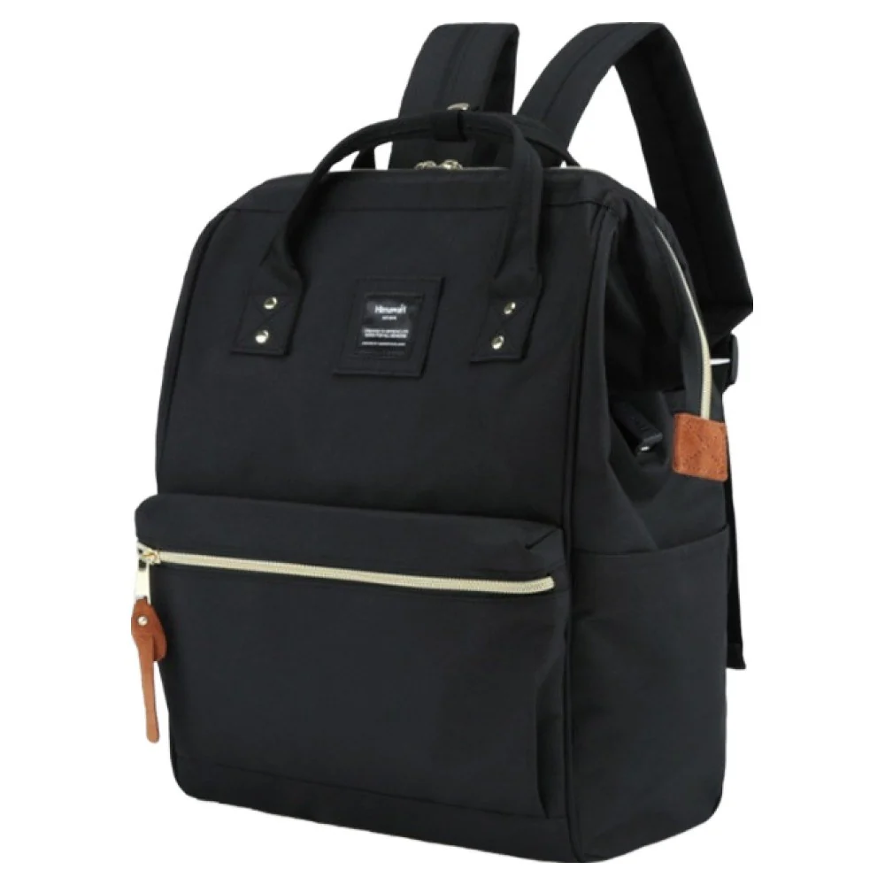

검정 백팩의 지퍼 선과 작은 장식을 가까이 보기
검정 백팩 여러 개를 작은 화면에서 보면 비슷한 윤곽으로 남습니다. 사진을 가까이 보면 앞면을 가로지르는 지퍼 선이나 손잡이 옆의 작은 부품이 각각 다릅니다. 큰 색을 검정으로 정한 뒤에도 고를 요소가 남는 이유입니다. 전체 모양과 가까운 세부를 다른 크기로 살펴보면 자신이 계속 보고 싶은 디자인을 구체적으로 찾을 수 있습니다.
처음에는 사진을 확대하지 않고 몸체와 앞면 주머니의 비율을 봅니다. 어느 선이 눈에 먼저 들어오는지 기억한 뒤 그 부분을 가까이 살펴봅니다. 같은 위치를 여러 장에서 보면 빛 때문에 밝게 보였던 것인지 실제 다른 색의 부품인지 구별할 자료가 생깁니다. 작은 반짝임이 보이면 같은 옵션의 다른 각도에서도 그 위치를 찾아봅니다.
검정 앞면을 가로지르는 한 줄
Himawari No.9001 제품 정보의 원본에는 검정 본체 앞의 밝은 가로 지퍼 선이 보입니다. 지퍼 끝에 달린 갈색 계열의 긴 부분과 위쪽의 작은 밝은 점도 눈에 들어옵니다. 멀리서 볼 때와 가까이 볼 때 주목하는 위치가 달라지는 디자인입니다. 여기서 확인하는 것은 보이는 색과 선이며 부품의 금속 성분이나 기능은 제품 안내에서 별도로 읽습니다.
밝은 가로선이 마음에 든다면 그 선이 앞면에서 어느 높이에 놓였는지 봅니다. 가운데에 가까운 선과 아래쪽에 있는 선은 몸체를 나누는 인상이 다를 수 있습니다. 정면의 대칭이 좋은지, 작은 갈색 부분이 한쪽에 있는 구성이 좋은지도 고를 수 있습니다. 취향을 좋고 나쁨으로 단정하기보다 다음 후보에서 다시 보고 싶은 요소를 남기는 방법입니다.
검정끼리 이어진 지퍼 선을 좋아하는 사람에게는 밝은 선이 많이 보일 수 있습니다. 반대로 여밈의 위치가 눈에 드러나는 구성을 편하게 느낄 수도 있습니다. 사진 크기를 줄였을 때도 그 선이 보이는지 살펴보면 전체에서 차지하는 비중을 알기 쉽습니다. 지퍼가 눈에 잘 보이는 인상과 실제 여닫기 편한지는 각각 확인할 조건입니다.

손잡이 연결부와 앞면 표식의 간격
위쪽 손잡이 주변에는 몸체와 다른 형태의 연결 부분이 보입니다. 작은 점과 봉제선이 한곳에 모여 있는지, 앞면 표식과 얼마쯤 떨어져 보이는지 원본에서 살펴봅니다. 정확한 간격을 사진의 픽셀로 재어 실제 치수로 바꿀 필요는 없습니다. 전체를 바라볼 때 복잡하게 느끼는지 간결하게 느끼는지를 비교할 시각 자료로 쓸 수 있습니다.
표식이 가방 가운데에 있어도 보는 거리에서는 크기가 작게 느껴질 수 있습니다. 모델이 착용한 사진과 제품만 놓은 사진을 같이 보면 그 차이를 읽기 좋습니다. 큰 글자나 로고를 피하고 싶은 사람은 일상 거리에서 어느 정도 드러나는지가 궁금할 수 있습니다. 가까이에서 보이는 글씨와 멀리서 남는 모양을 구분해 판단하면 됩니다.
손잡이와 앞면의 세부가 이미 눈에 들어온다면 키링이나 장식을 더했을 때 어떻게 보일지도 생각해볼 수 있습니다. 가방 사진을 그대로 한 번 보고, 평소 쓰는 장식의 색과 크기를 옆에 놓아봅니다. 본체의 긴 지퍼 부분과 새 장식이 같은 쪽에 모이면 어느 요소를 먼저 보고 싶은지 달라질 수 있습니다. 장식이 없는 현재 모습으로도 충분히 마음에 드는지 먼저 고를 수 있습니다.
검정색 안에서도 빛나는 면은 달라진다
원단 부분과 지퍼 부품은 조명에서 다르게 보일 수 있습니다. 정면 사진의 밝은 점을 확대하면 반사된 빛만 크게 보이는 경우도 있습니다. 실제 부품 색이 중요한 조건이라면 자연광과 실내의 원본 사진이 있는지 봅니다. 제품 설명에 부품의 재료가 제공되면 색과 함께 읽어볼 수 있습니다.
블랙이라는 옵션 이름은 전체 배색을 생략한 표현일 수 있습니다. No.9001을 볼 때에도 작은 갈색 부분과 밝은 지퍼 선을 함께 봅니다. 몸체가 검정이라는 사실과 모든 부품이 검정이라는 생각을 나누어 읽는 것입니다. 주문할 때 저장한 사진이 실제 선택한 옵션인지 확인하면 마음에 들었던 세부를 다른 조합과 혼동할 일을 줄일 수 있습니다.
실내의 어두운 옷과 함께 쓰면 작은 밝은 부분이 상대적으로 먼저 눈에 들어올 수 있습니다. 밝은 상의와 함께 보면 가방의 검정 윤곽이 더 눈에 들어올 수도 있습니다. 옷과 가방을 반드시 같은 색의 부품으로 맞춰야 하는 것은 아닙니다. 평소 입는 조합에서 어느 정도의 작은 대비를 좋아하는지 비교할 수 있습니다.
확대 사진을 닫은 뒤에도 마음에 남는가
세부를 모두 본 뒤에는 다시 가방 전체가 보이는 크기로 돌아옵니다. 가까이서 좋았던 긴 지퍼 부분이 멀리서는 어느 정도 남는지 봅니다. 작은 부품 하나 때문에 전체 형태가 마음에 들지 않는 후보를 억지로 고를 필요는 없습니다. 반대로 몸체가 마음에 든다면 눈에 잘 드러나지 않는 세부에 어느 정도까지 의미를 둘지도 스스로 정할 수 있습니다.
실물을 볼 수 있으면 자신의 평소 가방 자리에서 바라보는 거리로도 봅니다. 선반 가까이에서 세부를 보는 순간과 복도에서 멘 모습을 보는 순간은 다릅니다. 손으로 여밈을 사용할 때 그 부분이 잡기 쉬운지도 허용된 범위에서 확인할 수 있습니다. 디자인의 작은 대비를 고르는 일에 실제로 쓰는 손의 위치를 더해보는 과정입니다.
No.9001의 정면을 다시 보면 밝은 지퍼 선과 갈색의 작은 부분이 검정 몸체 위에 남습니다. 이 구성을 좋아한다면 추가 장식 없이 두었을 때의 모습도 후보에 남겨볼 만합니다. 검정 옷 위에 멜 날과 밝은 셔츠에 멜 날을 번갈아 떠올려보세요. 큰 윤곽을 고른 뒤 가까이에서 보이는 작은 대비까지 취향에 맞는지 살펴볼 수 있습니다.